Próximamente
Asturias, rumbo al CESA
Muy pronto, toda la información de las selecciones asturianas de balonmano en el Campeonato de España de Selecciones Autonómicas.

Próximamente
Muy pronto, toda la información de las selecciones asturianas de balonmano en el Campeonato de España de Selecciones Autonómicas.